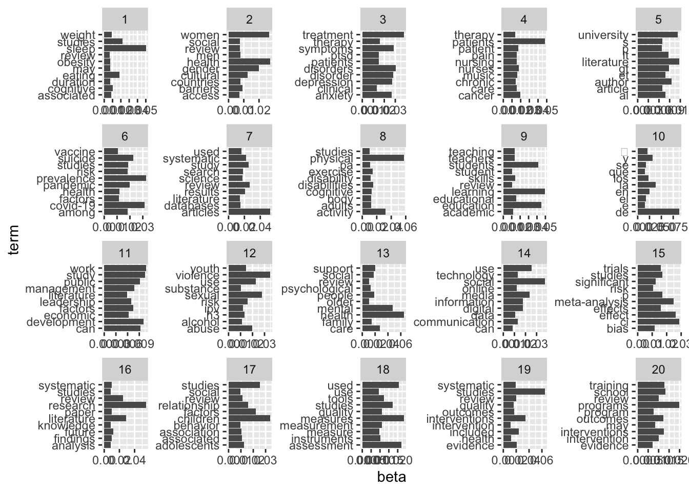
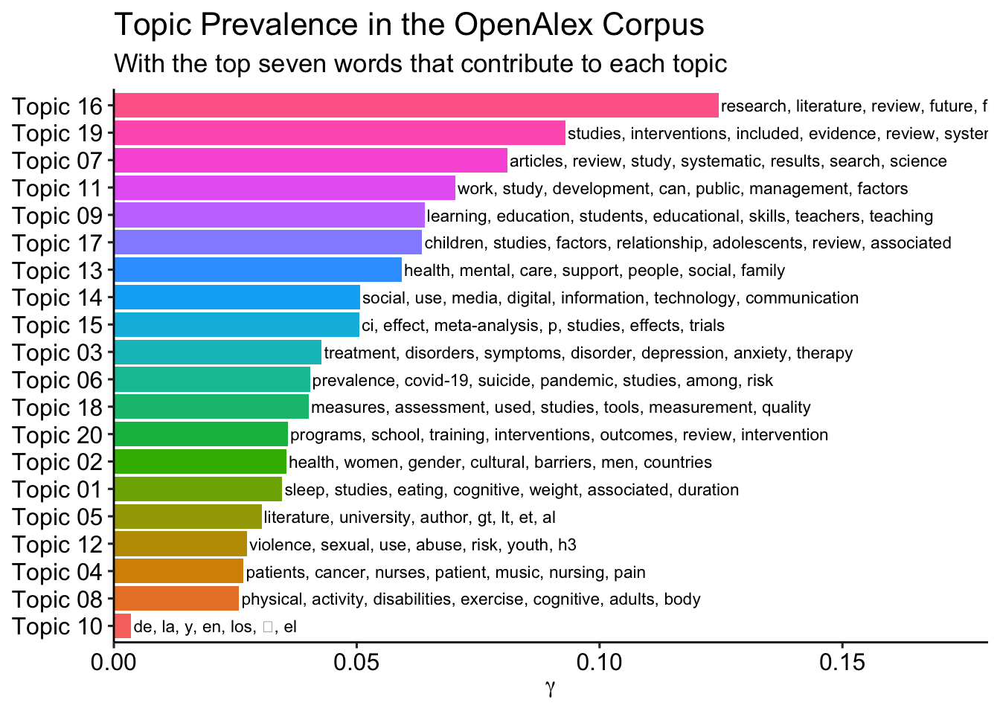
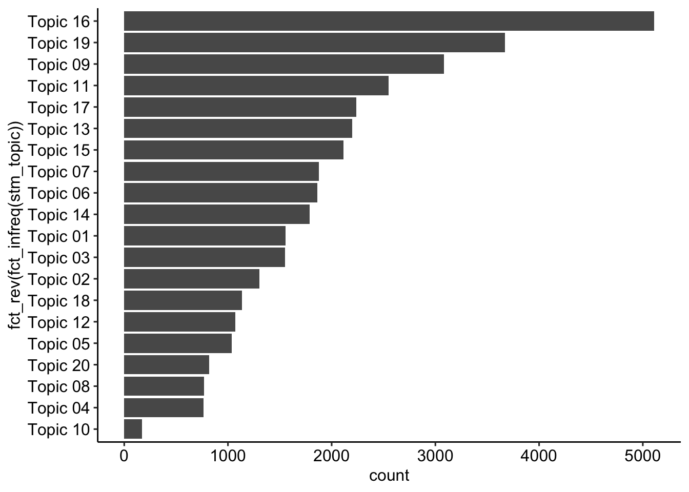
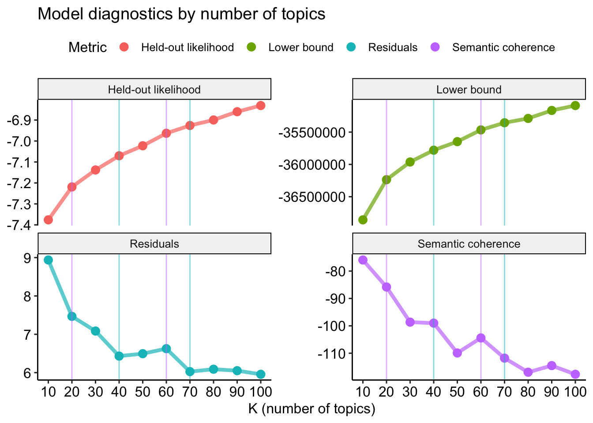
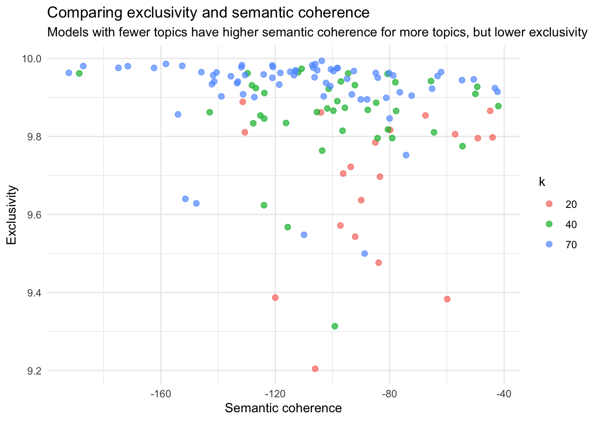

if (!require("pacman")) install.packages("pacman")
pacman::p_load(
here, qs, # file management
magrittr, janitor, # data wrangling
easystats, sjmisc, # data analysis
gt, gtExtras, # table visualization
ggpubr, ggwordcloud, # visualization
# text analysis
tidytext, widyr, # based on tidytext
quanteda, # based on quanteda
quanteda.textmodels, quanteda.textplots, quanteda.textstats,
stm, # structural topic modeling
openalexR, pushoverr, tictoc,
tidyverse # load last to avoid masking issues
)Unsupervised Machine Learning II
Session 10 - Showcase
 Link to slides
Link to slides
Preparation
review_works <- qs::qread(here("data/session-07/openalex-review_works-2013_2023.qs"))
# Create correct data
review_subsample <- review_works %>%
# Create additional factor variables
mutate(
publication_year_fct = as.factor(publication_year),
type_fct = as.factor(type)
) %>%
# Eingrenzung: Sprache und Typ
filter(language == "en") %>%
filter(type == "article") %>%
# Datentranformation
unnest(topics, names_sep = "_") %>%
filter(topics_name == "field") %>%
filter(topics_i == "1") %>%
# Eingrenzung: Forschungsfeldes
filter(
topics_display_name == "Social Sciences"|
topics_display_name == "Psychology"
) %>%
mutate(
field = as.factor(topics_display_name)
) %>%
# Eingrenzung: Keine Einträge ohne Abstract
filter(!is.na(ab))# Create corpus
quanteda_corpus <- review_subsample %>%
quanteda::corpus(
docid_field = "id",
text_field = "ab"
)
# Tokenize
quanteda_token <- quanteda_corpus %>%
quanteda::tokens(
remove_punct = TRUE,
remove_symbols = TRUE,
remove_numbers = TRUE,
remove_url = TRUE,
split_tags = FALSE # keep hashtags and mentions
) %>%
quanteda::tokens_tolower() %>%
quanteda::tokens_remove(
pattern = stopwords("en")
)
# Convert to Document-Feature-Matrix (DFM)
quanteda_dfm <- quanteda_token %>%
quanteda::dfm()
# Pruning
quanteda_dfm_trim <- quanteda_dfm %>%
dfm_trim(
min_docfreq = 10/nrow(review_subsample),
max_docfreq = 0.99,
docfreq_type = "prop")
# Convert for stm topic modeling
quanteda_stm <- quanteda_dfm_trim %>%
convert(to = "stm")Codechunks aus der Sitzung
(Re-)Estimation of k = 20 with metadata
# Estimate model
stm_mdl_k20 <- stm::stm(
documents = quanteda_stm$documents,
vocab = quanteda_stm$vocab,
prevalence =~ publication_year_fct + field,
K = 20,
seed = 42,
max.em.its = 1000,
data = quanteda_stm$meta,
init.type = "Spectral",
verbose = TRUE)# Overview
stm_mdl_k20A topic model with 20 topics, 36650 documents and a 14322 word dictionary.Erweiterte Auswertungen
Beta-Matrix
# Create tidy beta matrix
td_beta <- tidy(stm_mdl_k20)
# Output
td_beta# A tibble: 286,440 × 3
topic term beta
<int> <chr> <dbl>
1 1 #x0d 6.83e-44
2 2 #x0d 2.37e-30
3 3 #x0d 3.35e-45
4 4 #x0d 7.24e- 3
5 5 #x0d 1.45e-23
6 6 #x0d 5.23e-20
7 7 #x0d 2.70e-12
8 8 #x0d 3.32e-39
9 9 #x0d 8.78e- 4
10 10 #x0d 2.58e-12
# ℹ 286,430 more rows# Create top terms
top_terms <- td_beta %>%
arrange(beta) %>%
group_by(topic) %>%
top_n(7, beta) %>%
arrange(-beta) %>%
select(topic, term) %>%
summarise(terms = list(term)) %>%
mutate(terms = map(terms, paste, collapse = ", ")) %>%
unnest(cols = c(terms))
# Output
top_terms# A tibble: 20 × 2
topic terms
<int> <chr>
1 1 sleep, studies, eating, cognitive, weight, associated, duration
2 2 health, women, gender, cultural, barriers, men, countries
3 3 treatment, disorders, symptoms, disorder, depression, anxiety, therapy
4 4 patients, cancer, nurses, patient, music, nursing, pain
5 5 literature, university, author, gt, lt, et, al
6 6 prevalence, covid-19, suicide, pandemic, studies, among, risk
7 7 articles, review, study, systematic, results, search, science
8 8 physical, activity, disabilities, exercise, cognitive, adults, body
9 9 learning, education, students, educational, skills, teachers, teaching
10 10 de, la, y, en, los, 的, el
11 11 work, study, development, can, public, management, factors
12 12 violence, sexual, use, abuse, risk, youth, h3
13 13 health, mental, care, support, people, social, family
14 14 social, use, media, digital, information, technology, communication
15 15 ci, effect, meta-analysis, p, studies, effects, trials
16 16 research, literature, review, future, findings, systematic, paper
17 17 children, studies, factors, relationship, adolescents, review, associa…
18 18 measures, assessment, used, studies, tools, measurement, quality
19 19 studies, interventions, included, evidence, review, systematic, outcom…
20 20 programs, school, training, interventions, outcomes, review, intervent…td_beta %>%
group_by(topic) %>%
slice_max(beta, n = 10) %>%
ungroup() %>%
ggplot(aes(beta, term)) +
geom_col() +
facet_wrap(~ topic, scales = "free")

Gamma-Matrix
# Create tidy gamma matrix
td_gamma <- tidy(
stm_mdl_k20,
matrix = "gamma",
document_names = names(quanteda_stm$documents)
)
# Output
td_gamma# A tibble: 733,000 × 3
document topic gamma
<chr> <int> <dbl>
1 https://openalex.org/W4293003987 1 0.00473
2 https://openalex.org/W2750168540 1 0.000270
3 https://openalex.org/W1998933811 1 0.00368
4 https://openalex.org/W2547134104 1 0.00340
5 https://openalex.org/W3047898105 1 0.00263
6 https://openalex.org/W2149640470 1 0.00230
7 https://openalex.org/W2740726397 1 0.0374
8 https://openalex.org/W2974087526 1 0.00339
9 https://openalex.org/W2195703978 1 0.00287
10 https://openalex.org/W2093916237 1 0.170
# ℹ 732,990 more rowsHäufigkeit und Top Begriffe der Themen
prevalence <- td_gamma %>%
group_by(topic) %>%
summarise(gamma = mean(gamma)) %>%
arrange(desc(gamma)) %>%
left_join(top_terms, by = "topic") %>%
mutate(topic = paste0("Topic ",sprintf("%02d", topic)),
topic = reorder(topic, gamma))Table
prevalence %>%
gt() %>%
fmt_number(
columns = c(gamma),
decimals = 2) %>%
gtExtras::gt_theme_538()| topic | gamma | terms |
|---|---|---|
| Topic 16 | 0.12 | research, literature, review, future, findings, systematic, paper |
| Topic 19 | 0.09 | studies, interventions, included, evidence, review, systematic, outcomes |
| Topic 07 | 0.08 | articles, review, study, systematic, results, search, science |
| Topic 11 | 0.07 | work, study, development, can, public, management, factors |
| Topic 09 | 0.06 | learning, education, students, educational, skills, teachers, teaching |
| Topic 17 | 0.06 | children, studies, factors, relationship, adolescents, review, associated |
| Topic 13 | 0.06 | health, mental, care, support, people, social, family |
| Topic 14 | 0.05 | social, use, media, digital, information, technology, communication |
| Topic 15 | 0.05 | ci, effect, meta-analysis, p, studies, effects, trials |
| Topic 03 | 0.04 | treatment, disorders, symptoms, disorder, depression, anxiety, therapy |
| Topic 06 | 0.04 | prevalence, covid-19, suicide, pandemic, studies, among, risk |
| Topic 18 | 0.04 | measures, assessment, used, studies, tools, measurement, quality |
| Topic 20 | 0.04 | programs, school, training, interventions, outcomes, review, intervention |
| Topic 02 | 0.04 | health, women, gender, cultural, barriers, men, countries |
| Topic 01 | 0.03 | sleep, studies, eating, cognitive, weight, associated, duration |
| Topic 05 | 0.03 | literature, university, author, gt, lt, et, al |
| Topic 12 | 0.03 | violence, sexual, use, abuse, risk, youth, h3 |
| Topic 04 | 0.03 | patients, cancer, nurses, patient, music, nursing, pain |
| Topic 08 | 0.03 | physical, activity, disabilities, exercise, cognitive, adults, body |
| Topic 10 | 0.00 | de, la, y, en, los, 的, el |
Visualization
prevalence %>%
ggplot(aes(topic, gamma, label = terms, fill = topic)) +
geom_col(show.legend = FALSE) +
geom_text(hjust = 0, nudge_y = 0.0005, size = 3) +
coord_flip() +
scale_y_continuous(
expand = c(0,0),
limits = c(0, 0.18)) +
theme_pubr() +
theme(
plot.title = element_text(size = 16),
plot.subtitle = element_text(size = 13)) +
labs(
x = NULL, y = expression(gamma),
title = "Topic Prevalence in the OpenAlex Corpus",
subtitle = "With the top seven words that contribute to each topic")

Effect metadata
effects <- estimateEffect(
1:20 ~ publication_year_fct + field,
stm_mdl_k20,
meta = quanteda_stm$meta)# Comparison
# Effects of covariates on Topic 6
effects %>% summary(topics = 6)
Call:
estimateEffect(formula = 1:20 ~ publication_year_fct + field,
stmobj = stm_mdl_k20, metadata = quanteda_stm$meta)
Topic 6:
Coefficients:
Estimate Std. Error t value Pr(>|t|)
(Intercept) 0.0397265 0.0041205 9.641 < 2e-16 ***
publication_year_fct2014 -0.0016197 0.0056966 -0.284 0.776
publication_year_fct2015 -0.0024181 0.0054444 -0.444 0.657
publication_year_fct2016 -0.0032024 0.0052295 -0.612 0.540
publication_year_fct2017 -0.0033798 0.0047017 -0.719 0.472
publication_year_fct2018 -0.0048699 0.0048575 -1.003 0.316
publication_year_fct2019 -0.0009479 0.0046170 -0.205 0.837
publication_year_fct2020 0.0059633 0.0045198 1.319 0.187
publication_year_fct2021 0.0219055 0.0045459 4.819 1.45e-06 ***
publication_year_fct2022 0.0254267 0.0044530 5.710 1.14e-08 ***
publication_year_fct2023 0.0125154 0.0044587 2.807 0.005 **
fieldSocial Sciences -0.0103125 0.0014550 -7.088 1.39e-12 ***
---
Signif. codes: 0 '***' 0.001 '**' 0.01 '*' 0.05 '.' 0.1 ' ' 1# Effects of covariates on Topic 16
effects %>% summary(topics = 16)
Call:
estimateEffect(formula = 1:20 ~ publication_year_fct + field,
stmobj = stm_mdl_k20, metadata = quanteda_stm$meta)
Topic 16:
Coefficients:
Estimate Std. Error t value Pr(>|t|)
(Intercept) 0.064203 0.005203 12.339 <2e-16 ***
publication_year_fct2014 0.005880 0.007346 0.800 0.4235
publication_year_fct2015 0.013201 0.006726 1.963 0.0497 *
publication_year_fct2016 0.004145 0.006331 0.655 0.5127
publication_year_fct2017 0.006875 0.006313 1.089 0.2762
publication_year_fct2018 0.001558 0.006391 0.244 0.8074
publication_year_fct2019 -0.001864 0.005705 -0.327 0.7439
publication_year_fct2020 0.002190 0.005882 0.372 0.7097
publication_year_fct2021 0.002234 0.005559 0.402 0.6877
publication_year_fct2022 -0.001616 0.005693 -0.284 0.7766
publication_year_fct2023 0.007731 0.005593 1.382 0.1669
fieldSocial Sciences 0.085855 0.001704 50.375 <2e-16 ***
---
Signif. codes: 0 '***' 0.001 '**' 0.01 '*' 0.05 '.' 0.1 ' ' 1effects %>%
tidy() %>%
filter(
term != "(Intercept)",
term == "fieldSocial Sciences") %>%
select(-term) %>%
gt() %>%
fmt_number(
columns = -c(topic),
decimals = 3
) %>%
# Color social science topics "blue"
data_color(
columns = topic,
rows = estimate > 0,
method = "numeric",
palette = c("#04316A"),
alpha = 0.4
) %>%
# Color psychology topics "yellow"
data_color(
columns = topic,
rows = estimate < 0,
method = "numeric",
palette = c("#D3A518"),
alpha = 0.4
) %>%
# # Color effect size for estimation
# data_color(
# columns = estimate,
# method = "numeric",
# palette = "viridis"
# ) %>%
# # Color insignificant p-values
# data_color(
# columns = p.value,
# rows = p.value > 0.05,
# method = "numeric",
# palette = c("#C50F3C", "#C50F3C")
# ) %>%
gtExtras::gt_theme_538() | topic | estimate | std.error | statistic | p.value |
|---|---|---|---|---|
| 1 | −0.056 | 0.001 | −39.497 | 0.000 |
| 2 | 0.014 | 0.001 | 10.569 | 0.000 |
| 3 | −0.069 | 0.001 | −51.306 | 0.000 |
| 4 | −0.014 | 0.001 | −11.760 | 0.000 |
| 5 | 0.027 | 0.001 | 19.712 | 0.000 |
| 6 | −0.010 | 0.001 | −7.024 | 0.000 |
| 7 | 0.014 | 0.001 | 11.299 | 0.000 |
| 8 | −0.015 | 0.001 | −12.789 | 0.000 |
| 9 | 0.052 | 0.002 | 28.032 | 0.000 |
| 10 | −0.001 | 0.001 | −2.432 | 0.015 |
| 11 | 0.091 | 0.002 | 55.019 | 0.000 |
| 12 | 0.003 | 0.001 | 2.320 | 0.020 |
| 13 | −0.025 | 0.001 | −18.543 | 0.000 |
| 14 | 0.044 | 0.002 | 29.024 | 0.000 |
| 15 | −0.060 | 0.002 | −36.809 | 0.000 |
| 16 | 0.086 | 0.002 | 50.103 | 0.000 |
| 17 | −0.033 | 0.001 | −23.177 | 0.000 |
| 18 | −0.012 | 0.001 | −10.842 | 0.000 |
| 19 | −0.044 | 0.001 | −32.745 | 0.000 |
| 20 | 0.008 | 0.001 | 7.706 | 0.000 |
Zusammenführung der Daten
Merge mit Stammdaten
gamma_export <- stm_mdl_k20 %>%
tidytext::tidy(
matrix = "gamma",
document_names = names(quanteda_stm$documents)) %>%
dplyr::group_by(document) %>%
dplyr::slice_max(gamma) %>%
dplyr::mutate(main_topic = ifelse(gamma > 0.5, topic, NA)) %>%
rename(
top_topic = topic,
top_gamma = gamma) %>%
dplyr::ungroup() %>%
dplyr::left_join(review_subsample, by = c("document" = "id")) %>%
dplyr::rename(id = document) %>%
dplyr::mutate(
stm_topic = as.factor(paste("Topic", sprintf("%02d", top_topic)))
)Anzahl der Abstracts nach Thema
gamma_export %>%
ggplot(aes(x = fct_rev(fct_infreq(stm_topic)))) +
geom_bar() +
coord_flip() +
theme_pubr()

Anzahl der Abstracts nach Thema und Feld
gamma_export %>%
gtsummary::tbl_cross(
row = stm_topic,
col = field,
percent = "row",
)| field | Total | ||
|---|---|---|---|
| Psychology | Social Sciences | ||
| stm_topic | |||
| Topic 01 | 1,470 (94%) | 87 (5.6%) | 1,557 (100%) |
| Topic 02 | 649 (50%) | 652 (50%) | 1,301 (100%) |
| Topic 03 | 1,481 (95%) | 71 (4.6%) | 1,552 (100%) |
| Topic 04 | 459 (60%) | 306 (40%) | 765 (100%) |
| Topic 05 | 301 (29%) | 734 (71%) | 1,035 (100%) |
| Topic 06 | 1,116 (60%) | 745 (40%) | 1,861 (100%) |
| Topic 07 | 825 (44%) | 1,051 (56%) | 1,876 (100%) |
| Topic 08 | 540 (70%) | 227 (30%) | 767 (100%) |
| Topic 09 | 821 (27%) | 2,260 (73%) | 3,081 (100%) |
| Topic 10 | 114 (67%) | 57 (33%) | 171 (100%) |
| Topic 11 | 303 (12%) | 2,244 (88%) | 2,547 (100%) |
| Topic 12 | 439 (41%) | 630 (59%) | 1,069 (100%) |
| Topic 13 | 1,477 (67%) | 722 (33%) | 2,199 (100%) |
| Topic 14 | 509 (28%) | 1,277 (72%) | 1,786 (100%) |
| Topic 15 | 1,815 (86%) | 299 (14%) | 2,114 (100%) |
| Topic 16 | 1,369 (27%) | 3,742 (73%) | 5,111 (100%) |
| Topic 17 | 1,672 (75%) | 566 (25%) | 2,238 (100%) |
| Topic 18 | 737 (65%) | 396 (35%) | 1,133 (100%) |
| Topic 19 | 2,552 (70%) | 1,118 (30%) | 3,670 (100%) |
| Topic 20 | 342 (42%) | 475 (58%) | 817 (100%) |
| Total | 18,991 (52%) | 17,659 (48%) | 36,650 (100%) |
Fokus: Thema 16
gamma_export %>%
filter(stm_topic == "Topic 16") %>%
arrange(-top_gamma) %>%
select(title, so, top_gamma, type, ab) %>%
slice_head(n = 3) %>%
gt() %>%
fmt_number(
columns = c(top_gamma),
decimals = 2) %>%
gtExtras::gt_theme_538()| title | so | top_gamma | type | ab |
|---|---|---|---|---|
| Theory of Knowledge for Literature Reviews: An Epistemological Model, Taxonomy and Empirical Analysis of IS Literature | NA | 0.93 | article | Literature reviews play an important role in the development of knowledge. Yet, we observe a lack of theoretical underpinning of and epistemological insights into how literature reviews can contribute to knowledge creation and have actually contributed in the IS discipline. To address these theoretical and empirical research gaps, we suggest a novel epistemological model of literature reviews. This model allows us to align different contributions of literature reviews with their underlying knowledge conversions - thereby building a bridge between the previously largely unconnected fields of literature reviews and epistemology. We evaluate the appropriateness of the model by conducting an empirical analysis of 173 IS literature reviews which were published in 39 pertinent IS journals between 2000 and 2014. Based on this analysis, we derive an epistemological taxonomy of IS literature reviews, which complements previously suggested typologies. |
| Theory of Knowledge for Literature Reviews: An Epistemological Model, Taxonomy and Empirical Analysis of IS Literature Completed Research Paper | NA | 0.93 | article | Literature reviews play an important role in the development of knowledge. Yet, we observe a lack of theoretical underpinning of and epistemological insights into how literature reviews can contribute to knowledge creation and have actually contributed in the IS discipline. To address these theoretical and empirical research gaps, we suggest a novel epistemological model of literature reviews. This model allows us to align different contributions of literature reviews with their underlying knowledge conversions - thereby building a bridge between the previously largely unconnected fields of literature reviews and epistemology. We evaluate the appropriateness of the model by conducting an empirical analysis of 173 IS literature reviews which were published in 39 pertinent IS journals between 2000 and 2014. Based on this analysis, we derive an epistemological taxonomy of IS literature reviews, which complements previously suggested typologies. |
| Relationality in negotiations: a systematic review and propositions for future research | ˜The œinternational journal of conflict management/International journal of conflict management | 0.93 | article | Purpose The purpose of this paper is to systematically review and analyze the important, yet under-researched, topic of relationality in negotiations and propose new directions for future negotiation research. Design/methodology/approach This paper conducts a systematic review of negotiation literature related to relationality from multiple disciplines. Thirty-nine leading and topical academic journals are selected and 574 papers on negotiation are reviewed from 1990 to 2014. Based on the systematic review, propositions regarding the rationales for relationality in negotiations are developed and future research avenues in this area are discussed. Findings Of 574 papers on negotiations published in 39 peer-reviewed journals between 1990 and 2014, only 18 papers have studied and discussed relationality in negotiations. This suggests that relationality as a theoretical theme has long been under-researched in negotiation research. For future research, this paper proposes to incorporate the dynamic, cultural and mechanism perspectives, and to use a qualitative approach to study relationality in negotiations. Originality/value This paper presents the first systematic review of the negotiation literature on relationality, and identifies new research topics on relationality in negotiations. In so doing, this research opens new avenues for future negotiation research on relationality. |
Fokus: Thema 6
gamma_export %>%
filter(stm_topic == "Topic 06") %>%
arrange(-top_gamma) %>%
select(title, so, top_gamma, type, ab) %>%
slice_head(n = 3) %>%
gt() %>%
fmt_number(
columns = c(top_gamma),
decimals = 2) %>%
gtExtras::gt_theme_538()| title | so | top_gamma | type | ab |
|---|---|---|---|---|
| The Acceptance of COVID-19 Vaccine: A Global Rapid Systematic Review and Meta-Analysis | Social Science Research Network | 0.89 | article | Background: Vaccination seems to be the most effective way to prevent and control the spread of COVID-19, a disease that has been playing havoc with the lives of over 7 billion people across the globe. Vaccine hesitancy is probably the most common problem worldwide. This study aims to inspect the COVID-19 vaccine acceptance rates worldwide among the general population and healthcare workers. In addition, it compares the vaccine acceptance rates between the pre-and post-vaccine approval periods.Method: A systematic search was conducted on April 25, 2021, through PubMed, MEDLINE, Web of Science, and GOOGLE SCHOLAR databases using PRISMA and MOOSE statements. Q-test, and statistics were used to search for heterogeneity, and Eggers's test and funnel plot were applied to assess the publication bias. The random-effects model was used to estimate the pooled acceptance rates of the COVID-19 vaccines.Results: The combined COVID-19 vaccine acceptance rate among the general population and healthcare workers (n=1,581,562) was estimated at 61.74%. The vaccine acceptance rate among the general population was 62.66% and the rate among healthcare workers was 57.89%. The acceptance rate decreased from 67.21% to 53.44% among the general population and remained constant among healthcare workers during the pre and post-vaccine approval periods. The acceptance rates also vary in different regions of the world. The highest acceptance rate was found in Western Pacific Region (67.85%) and the lowest was found in African Region (39.51%).Conclusion: Low COVID-19 vaccine acceptance rate might be a massive barrier to getting rid of the pandemic. More researches are needed to address the responsible factors influencing the global rate of COVID-19 vaccine acceptance. Integrated global efforts are required to remove the barriers. |
| Prevalence of Suicidal Behavior Among Students in South-East Asia: A Systematic Review and Meta-Analysis | Archives of Suicide Research | 0.88 | article | Estimation of rates of suicidal behaviors (ideation, plan, and attempt) would help to understand the burden and prioritize prevention strategies. However, no attempt to assess suicidal behavior among students was identified in South-East Asia (SEA). We aimed to assess the prevalence of suicidal behavior (ideation, plan, and attempt) among students in SEA.We followed PRISMA 2020 guidelines and registered the protocol in PROSPERO (CRD42022353438). We searched in Medline, Embase, and PsycINFO and performed meta-analyses to pool the lifetime, 1-year, and point prevalence rates for suicidal ideation, plans, and attempts. We considered the duration of a month for point prevalence.The search identified 40 separate populations from which 46 were included in the analyses, as some studies included samples from multiple countries. The pooled prevalence of suicidal ideation was 17.4% (confidence interval [95% CI], 12.4%-23.9%) for lifetime, 9.33% (95% CI, 7.2%-12%) for the past year, and 4.8% (95% CI, 3.6%-6.4%) for the present time. The pooled prevalence of suicide plans was 9% (95% CI, 6.2%-12.9%) for lifetime, 7.3% (95% CI, 5.1%-10.3%) for the past year, and 2.3% (95% CI, 0.8%-6.7%) for the present time. The pooled prevalence of suicide attempts was 5.2% (95% CI, 3.5%-7.8%) for lifetime and 4.5% (95% CI, 3.4%-5.8%) for the past year. Higher rates of suicide attempts in the lifetime were noted in Nepal (10%) and Bangladesh (9%), while lower rates were reported in India (4%) and Indonesia (5%).Suicidal behaviors are a common phenomenon among students in the SEA region. These findings call for integrated, multisectoral efforts to prevent suicidal behaviors in this group. |
| First COVID-19 Booster Dose in the General Population: A Systematic Review and Meta-Analysis of Willingness and Its Predictors | Vaccines | 0.88 | article | The emergence of breakthrough infections and new highly contagious variants of SARS-CoV-2 threaten the immunization in individuals who had completed the primary COVID-19 vaccination. This systematic review and meta-analysis investigated, for the first time, acceptance of the first COVID-19 booster dose and its associated factors among fully vaccinated individuals. We followed the PRISMA guidelines. We searched Scopus, Web of Science, Medline, PubMed, ProQuest, CINAHL and medrxiv from inception to 21 May 2022. We found 14 studies including 104,047 fully vaccinated individuals. The prevalence of individuals who intend to accept a booster was 79.0%, while the prevalence of unsure individuals was 12.6%, and the prevalence of individuals that intend to refuse a booster was 14.3%. The main predictors of willingness were older age, flu vaccination in the previous season, and confidence in COVID-19 vaccination. The most important reasons for decline were adverse reactions and discomfort experienced after previous COVID-19 vaccine doses and concerns for serious adverse reactions to COVID-19 booster doses. Considering the burden of COVID-19, a high acceptance rate of booster doses could be critical in controlling the pandemic. Our findings are innovative and could help policymakers to design and implement specific COVID-19 vaccination programs in order to decrease booster vaccine hesitancy. |
Die Suche nach dem optimalen k
# Define parameters
future::plan(future::multisession()) # use multiple sessions
topic_range <- seq(from = 10, to = 100, by = 10)
# Initiate notifications & time tracking
tic("STM extended search")
# Estimate models
stm_search <- tibble(k = topic_range) %>%
mutate(
mdl = furrr::future_map(
k,
~stm::stm(
documents = quanteda_stm$documents,
vocab = quanteda_stm$vocab,
prevalence =~ publication_year_fct + field,
K = .,
seed = 42,
max.em.its = 1000,
data = quanteda_stm$meta,
init.type = "Spectral",
verbose = FALSE),
.options = furrr::furrr_options(seed = 42)
)
)
# Sent status update and finish time tracking
toc(log = TRUE)Erstellung des “Heldouts”
heldout <- make.heldout(
documents = quanteda_stm$documents,
vocab = quanteda_stm$vocab,
seed = 42)Evaluation der Modelle
stm_search$results <- stm_search %>%
mutate(
exclusivity = map(mdl, exclusivity),
semantic_coherence = map(mdl, semanticCoherence, quanteda_stm$documents),
eval_heldout = map(mdl, eval.heldout, heldout$missing),
residual = map(mdl, checkResiduals, quanteda_stm$documents),
bound = map_dbl(mdl, function(x) max(x$convergence$bound)),
lfact = map_dbl(mdl, function(x) lfactorial(x$settings$dim$K)),
lbound = bound + lfact,
iterations = map_dbl(mdl, function(x) length(x$convergence$bound)))Vergleich verschiedener Statistiken
stm_search$results %>%
# Create data for graph
transmute(
k,
`Lower bound` = lbound,
Residuals = map_dbl(residual, "dispersion"),
`Semantic coherence` = map_dbl(semantic_coherence, mean),
`Held-out likelihood` = map_dbl(eval_heldout, "expected.heldout")
) %>%
gather(Metric, Value, -k) %>%
# Create graph
ggplot(aes(k, Value, color = Metric)) +
geom_line(linewidth = 1.5, alpha = 0.7, show.legend = FALSE) +
geom_point(size = 3) +
# Add marker
geom_vline(aes(xintercept = 20), color = "#C77CFF", alpha = .5) +
geom_vline(aes(xintercept = 40), color = "#00BFC4", alpha = .5) +
geom_vline(aes(xintercept = 60), color = "#C77CFF", alpha = .5) +
geom_vline(aes(xintercept = 70), color = "#00BFC4", alpha = .5) +
scale_x_continuous(breaks = seq(from = 10, to = 100, by = 10)) +
facet_wrap(~Metric, scales = "free_y") +
labs(x = "K (number of topics)",
y = NULL,
title = "Model diagnostics by number of topics"
) +
theme_pubr()

stm_search$results %>%
select(k, exclusivity, semantic_coherence) %>%
filter(k %in% c(20, 40, 70)) %>%
unnest(cols = c(exclusivity, semantic_coherence)) %>%
mutate(k = as.factor(k)) %>%
ggplot(aes(semantic_coherence, exclusivity, color = k)) +
geom_point(size = 2, alpha = 0.7) +
labs(x = "Semantic coherence",
y = "Exclusivity",
title = "Comparing exclusivity and semantic coherence",
subtitle = "Models with fewer topics have higher semantic coherence for more topics, but lower exclusivity"
) +
theme_minimal()
